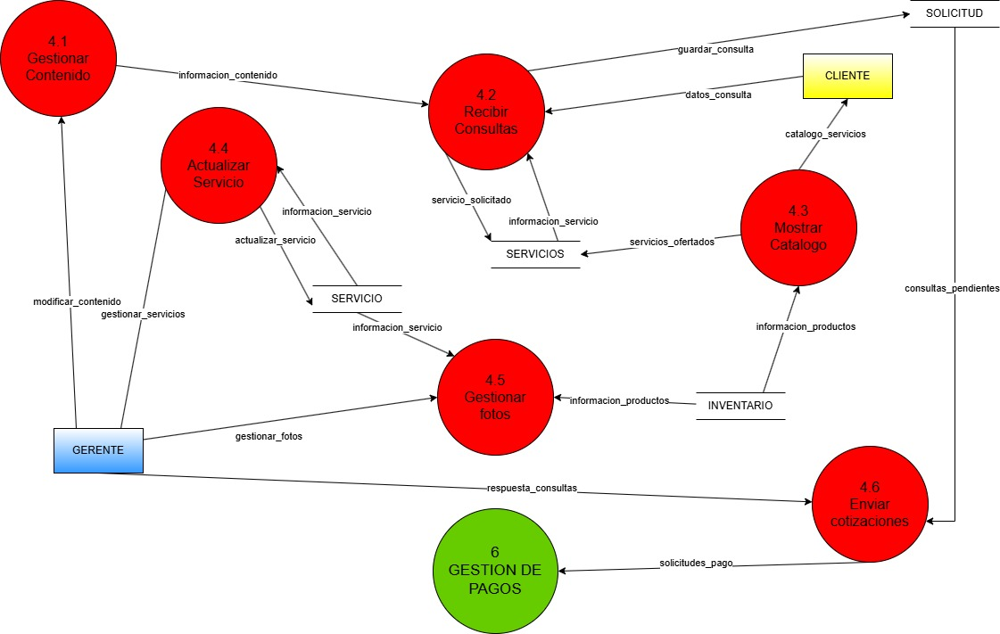

Para modelar el proyecto usamos el paradigma del Análisis Estructurado: es una metodología tradicional de desarrollo de software que se enfoca en entender, modelar y descomponer un sistema de manera lógica antes de su implementación física.
Modelo Ambiental
Es una representación de los límites y la interacción del sistema con su entorno. Es una herramienta utilizada para identificar cómo el sistema se relaciona con entidades externas, como usuarios, otros sistemas y bases de datos. Este modelo ayuda a definir:
-
Entradas y salidas del sistema
Qué información recibe y qué información genera. -
Interacciones con actores externos
Quiénes son los usuarios y qué acciones realizan. -
Restricciones del entorno
Factores externos que pueden influir en el sistema.
El Modelo Ambiental se compone de los siguientes puntos:
-
Declaración de Propósitos
Constituye el enunciado del problema, donde debe estar lo más claramente planteado. -
Diagrama de contexto
Delimita el sistema y su entorno. Muestra cómo es que una o varias entradas se transforman en salidas. Se lo anota con la forma de una burbuja que representa el sistema, y flechas con leyenda que indican las entradas y salidas de las entidades que interactúan. -
Lista de Acontecimientos
Lista narrativa de los estímulos del mundo exterior, los flujos de datos más importantes.
Modelo Ambiental del proyecto
Modelo de Comportamiento
OOtra parte del paradigma que usaremos es el Modelo de Comportamiento que describe cómo se requiere que el sistema interactue de manera exitosa con el ambiente, se compondrá de:
-
Diagrama General del Sistema
Permite modelar los procesos que realiza el sistema: se dibuja un DFD con un proceso de cada acontecimiento identificado, se añaden las entidades externas, que inician los eventos identificados en la lista de acontecimientos; a continuacion, se modelan los datos añadiendo los almacenamientos necesarios. Finalmente se compara con el diagrama de contexto para asegurar la consistencia. -
Niveles de Diagrama de Flujo de Datos
Algunas veces se puede construir una lista de acontecimientos muy larga impediría ver subprocesos que se contienen en un determinado proceso cuando se construye el Diagrama General del Sistema. Para solucionar eso se usa los niveles de DFD, que nos permiten ver los subsistemas que puede tener el sistema. Cada uno se representa como un círculo, dentro del cual se incluyen los subprocesos identificados. Se mantienen las entidades externas, los almacenamientos (bases de datos) y los flujos de información, luego se compara con el proceso para verificar su consistencia. -
Diagrama Entidad - Relación
Se pone a graficar el Diagrama ER de todo el sistema en general: (no siempre es perfecto, pero analizando a detalle se rescata lo importante).
Modelo de Comportamiento del proyecto
1. Modelo de comportamiento - Nivel 1

1.2. Modelo de comportamiento 1 - Nivel 2
2.2. Modelo de comportamiento 2 - Nivel 2
3.2. Modelo de comportamiento 3 - Nivel 2
4.2. Modelo de comportamiento 4 - Nivel 2
